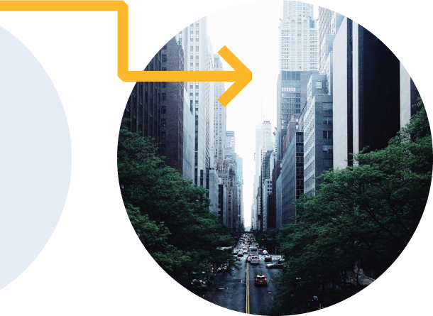
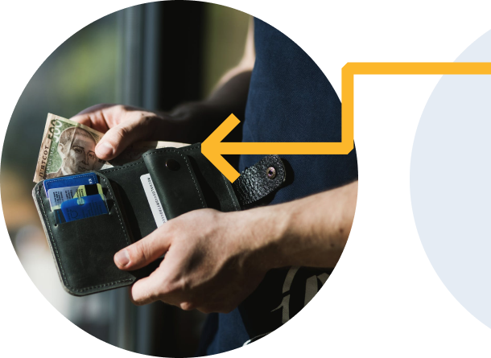

Easy to use riding telemetry
The Scoot app is available with riding telemetry. This means it can show you your average speed, how long you've been using the scooter, your traveling distance, and many more things all in an easy to use app.

Coming to a city near
Scoot is available in 4 major cities so far. We’re expanding rapidly, so be sure to let us know if you want to see us in your hometown. We’re aiming to let our scooters loose on 23 cities over the coming year.
Zero hassle payments
Our payment is as easy as one two three. We accept most credit cards and debit cards. You can also link your PayPal account inside the app. Need to pay later? No worries! You can defer payment for up to a month.
